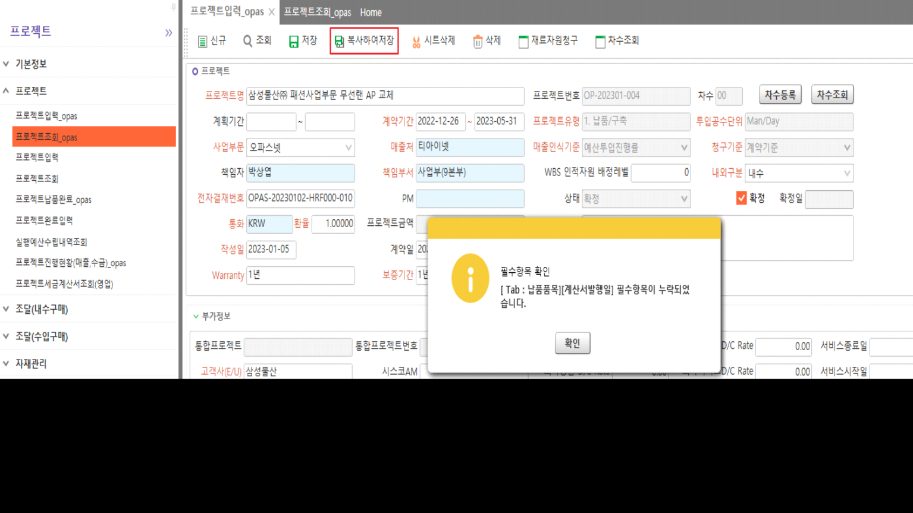

(복사저장) 프로젝트입력 - Tab 필수항목 누락 / 오파스넷

마스터 - 프로젝트유형 에 따라 탭 부분 visible 처리
화면에 안보이는 납품품목 탭의 필수값 누락으로 인해 오류 발생
저장과 다르게 복사저장의 경우 공백으로 조회된 부분을 저장으로 가져가기 때문에 오류 발생
기존에는 마스터 '계획기간' 이 필수값이었고, 계획기간 값을 납품품목 탭 - 납품예정일 테이블에 저장하기 때문에 오류 발생
=> 필수값으로 바뀐 계약기간을 납품예정일 테이블에 저장하도록 sp 변경